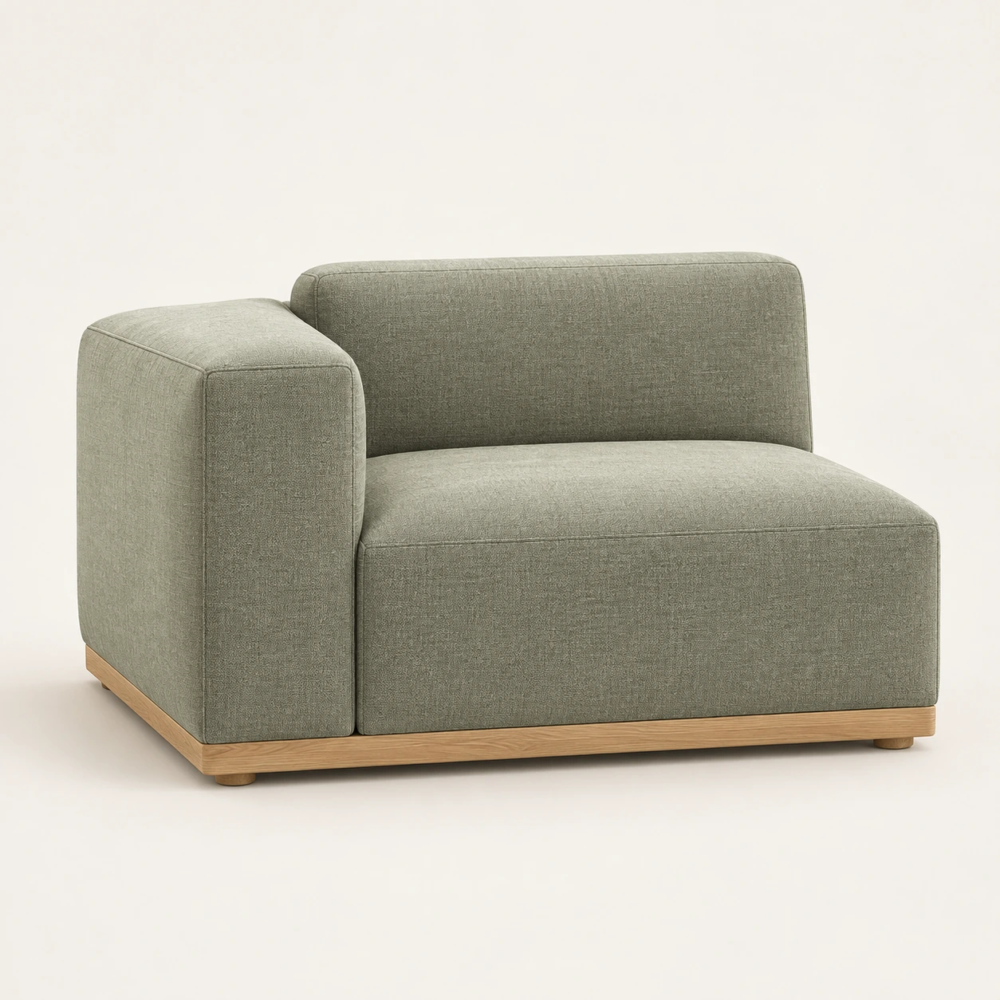
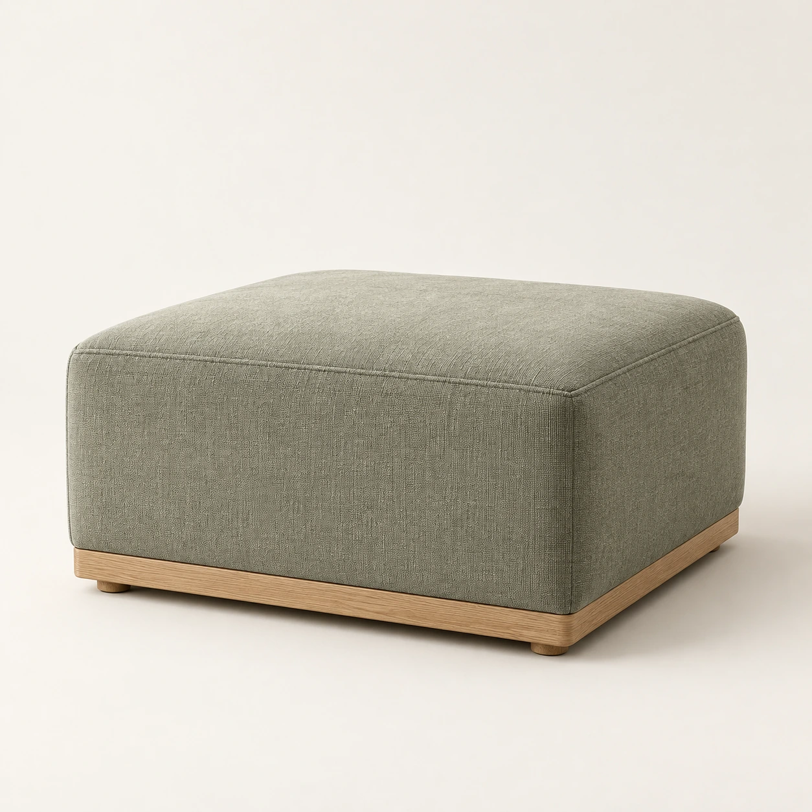
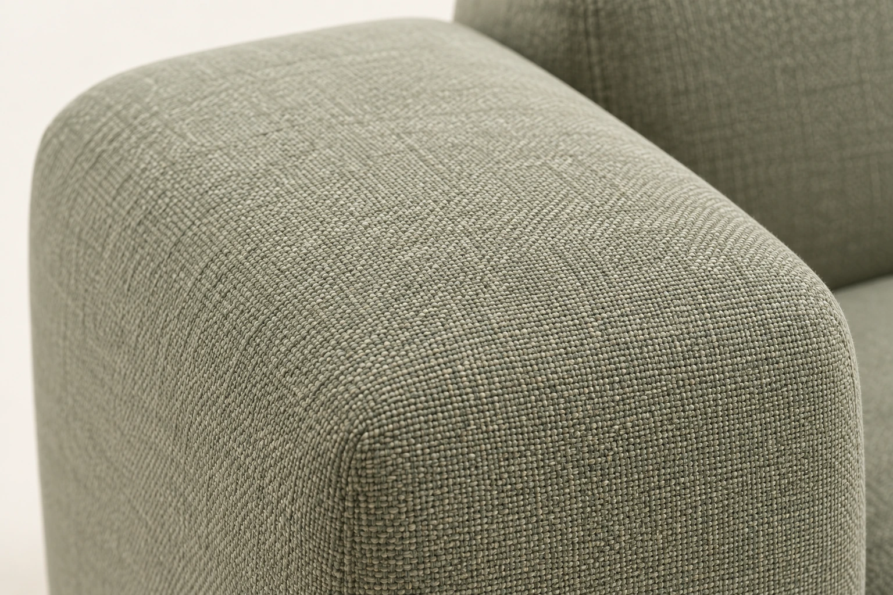
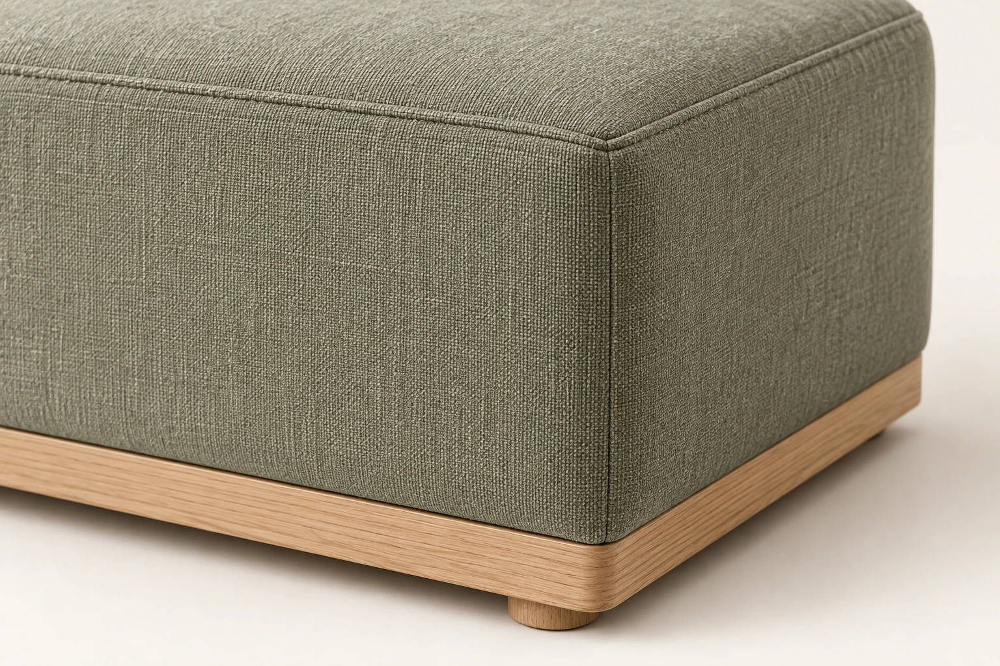
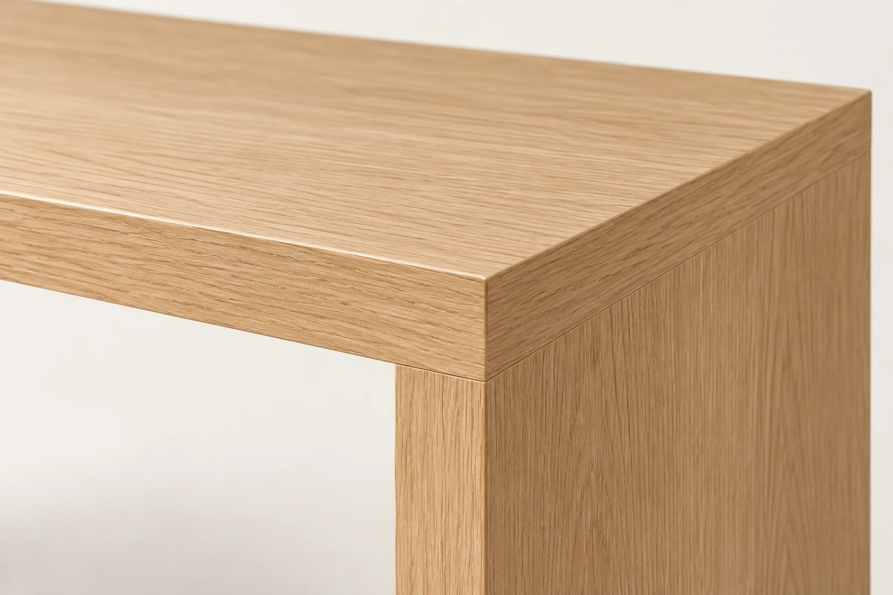
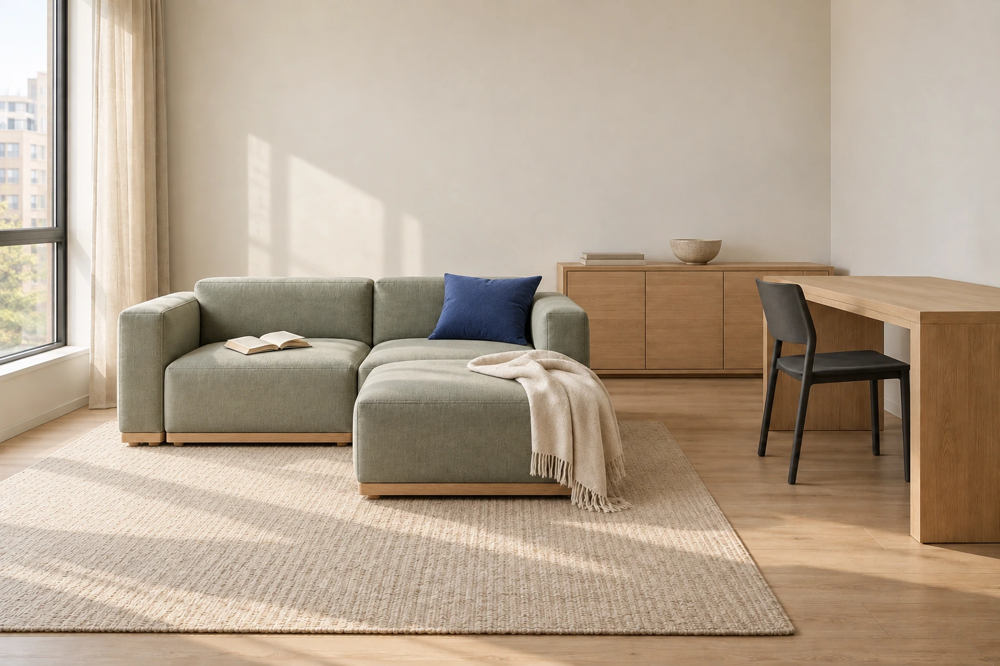

Визуальная сверка / 10.10.2026
Одна коллекция.
Десять изображений
Предметные кадры, детали и интерьерные сцены согласованы по видимым признакам. Три крупных плана утверждены и включены в комплект.
Предметные изображения




Крупные планы



Интерьерные сцены



Результат проверки
| Признак | Наблюдение |
|---|---|
| Мягкая мебель | Общий шалфейный цвет, простые швы, скруглённые объёмы и низкие деревянные основания. |
| Стол и хранение | Светлый дуб и простая панельная конструкция повторяются в комнате и предметных кадрах. |
| Перестановка | Пуф и стул меняют положение; диван, стол и тумба сохраняют назначение и место. |
| Оттенки | Есть небольшая разница из-за света, ракурса и масштаба кадра. Она не меняет общую палитру коллекции. |
Точные размеры, состав наполнения, внутренние полки и соединительные узлы нельзя подтвердить по этим изображениям. На лендинге они приведены как утверждённые проектные параметры вымышленного бренда. Корректирующая генерация по итогам визуальной сверки не требуется.